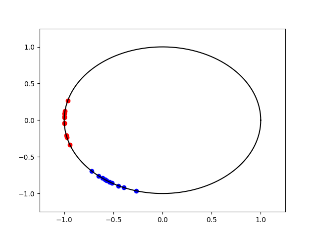

Note
Go to the end to download the full example code.
OT distance on the Circle
Shows how to compute the Wasserstein distance on the circle
# Author: Clément Bonet <clement.bonet@univ-ubs.fr>
#
# License: MIT License
# sphinx_gallery_thumbnail_number = 2
import numpy as np
import matplotlib.pylab as pl
import ot
from scipy.special import iv
Plot data
def pdf_von_Mises(theta, mu, kappa):
pdf = np.exp(kappa * np.cos(theta - mu)) / (2.0 * np.pi * iv(0, kappa))
return pdf
t = np.linspace(0, 2 * np.pi, 1000, endpoint=False)
mu1 = 1
kappa1 = 20
mu_targets = np.linspace(mu1, mu1 + 2 * np.pi, 10)
pdf1 = pdf_von_Mises(t, mu1, kappa1)
pl.figure(1)
for k, mu in enumerate(mu_targets):
pdf_t = pdf_von_Mises(t, mu, kappa1)
if k == 0:
label = "Source distributions"
else:
label = None
pl.plot(t / (2 * np.pi), pdf_t, c="b", label=label)
pl.plot(t / (2 * np.pi), pdf1, c="r", label="Target distribution")
pl.legend()
mu2 = 0
kappa2 = kappa1
x1 = np.random.vonmises(mu1, kappa1, size=(10,)) + np.pi
x2 = np.random.vonmises(mu2, kappa2, size=(10,)) + np.pi
angles = np.linspace(0, 2 * np.pi, 150)
pl.figure(2)
pl.plot(np.cos(angles), np.sin(angles), c="k")
pl.xlim(-1.25, 1.25)
pl.ylim(-1.25, 1.25)
pl.scatter(np.cos(x1), np.sin(x1), c="b")
pl.scatter(np.cos(x2), np.sin(x2), c="r")
- 
<matplotlib.collections.PathCollection object at 0x7f68698b31c0>
Compare the Euclidean Wasserstein distance with the Wasserstein distance on the circle
This examples illustrates the periodicity of the Wasserstein distance on the circle. We choose as target distribution a von Mises distribution with mean \(\mu_{\mathrm{target}}\) and \(\kappa=20\). Then, we compare the distances with samples obtained from a von Mises distribution with parameters \(\mu_{\mathrm{source}}\) and \(\kappa=20\). The Wasserstein distance on the circle takes into account the periodicity and attains its maximum in \(\mu_{\mathrm{target}}+1\) (the antipodal point) contrary to the Euclidean version.
mu_targets = np.linspace(0, 2 * np.pi, 200)
xs = np.random.vonmises(mu1 - np.pi, kappa1, size=(500,)) + np.pi
n_try = 5
xts = np.zeros((n_try, 200, 500))
for i in range(n_try):
for k, mu in enumerate(mu_targets):
# np.random.vonmises deals with data on [-pi, pi[
xt = np.random.vonmises(mu - np.pi, kappa2, size=(500,)) + np.pi
xts[i, k] = xt
# Put data on S^1=[0,1[
xts2 = xts / (2 * np.pi)
xs2 = np.concatenate([xs[None] for k in range(200)], axis=0) / (2 * np.pi)
L_w2_circle = np.zeros((n_try, 200))
L_w2 = np.zeros((n_try, 200))
for i in range(n_try):
w2_circle = ot.wasserstein_circle(xs2.T, xts2[i].T, p=2)
w2 = ot.wasserstein_1d(xs2.T, xts2[i].T, p=2)
L_w2_circle[i] = w2_circle
L_w2[i] = w2
m_w2_circle = np.mean(L_w2_circle, axis=0)
std_w2_circle = np.std(L_w2_circle, axis=0)
m_w2 = np.mean(L_w2, axis=0)
std_w2 = np.std(L_w2, axis=0)
pl.figure(1)
pl.plot(mu_targets / (2 * np.pi), m_w2_circle, label="Wasserstein circle")
pl.fill_between(
mu_targets / (2 * np.pi),
m_w2_circle - 2 * std_w2_circle,
m_w2_circle + 2 * std_w2_circle,
alpha=0.5,
)
pl.plot(mu_targets / (2 * np.pi), m_w2, label="Euclidean Wasserstein")
pl.fill_between(
mu_targets / (2 * np.pi), m_w2 - 2 * std_w2, m_w2 + 2 * std_w2, alpha=0.5
)
pl.vlines(
x=[mu1 / (2 * np.pi)],
ymin=0,
ymax=np.max(w2),
linestyle="--",
color="k",
label=r"$\mu_{\mathrm{target}}$",
)
pl.legend()
pl.xlabel(r"$\mu_{\mathrm{source}}$")
pl.show()
/home/circleci/project/ot/lp/solver_1d.py:796: RuntimeWarning: divide by zero encountered in divide
(Ctp - Ctm + tm * dCptm - tp * dCmtp) / (dCptm - dCmtp)
/home/circleci/project/ot/lp/solver_1d.py:796: RuntimeWarning: invalid value encountered in divide
(Ctp - Ctm + tm * dCptm - tp * dCmtp) / (dCptm - dCmtp)
Wasserstein distance between von Mises and uniform for different kappa
When \(\kappa=0\), the von Mises distribution is the uniform distribution on \(S^1\).
kappas = np.logspace(-5, 2, 100)
n_try = 20
xts = np.zeros((n_try, 100, 500))
for i in range(n_try):
for k, kappa in enumerate(kappas):
# np.random.vonmises deals with data on [-pi, pi[
xt = np.random.vonmises(0, kappa, size=(500,)) + np.pi
xts[i, k] = xt / (2 * np.pi)
L_w2 = np.zeros((n_try, 100))
for i in range(n_try):
L_w2[i] = ot.semidiscrete_wasserstein2_unif_circle(xts[i].T)
m_w2 = np.mean(L_w2, axis=0)
std_w2 = np.std(L_w2, axis=0)
pl.figure(1)
pl.plot(kappas, m_w2)
pl.fill_between(kappas, m_w2 - std_w2, m_w2 + std_w2, alpha=0.5)
pl.title(r"Evolution of $W_2^2(vM(0,\kappa), Unif(S^1))$")
pl.xlabel(r"$\kappa$")
pl.show()
Total running time of the script: (0 minutes 4.018 seconds)